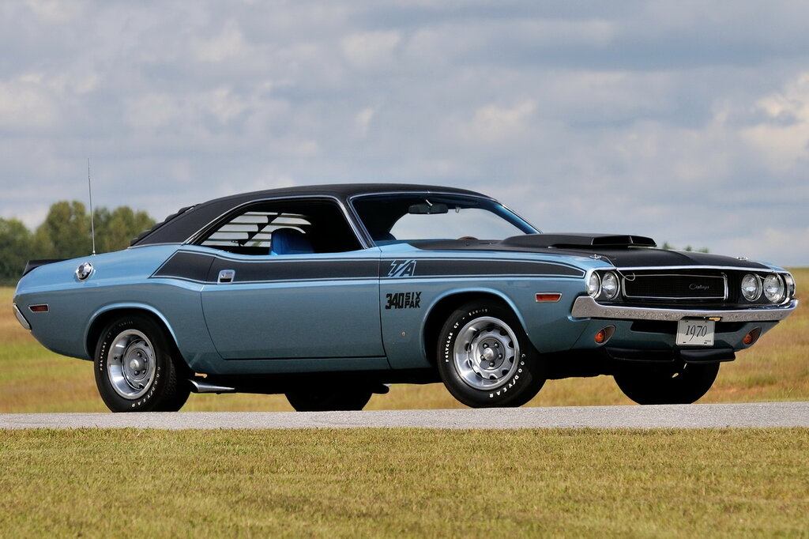
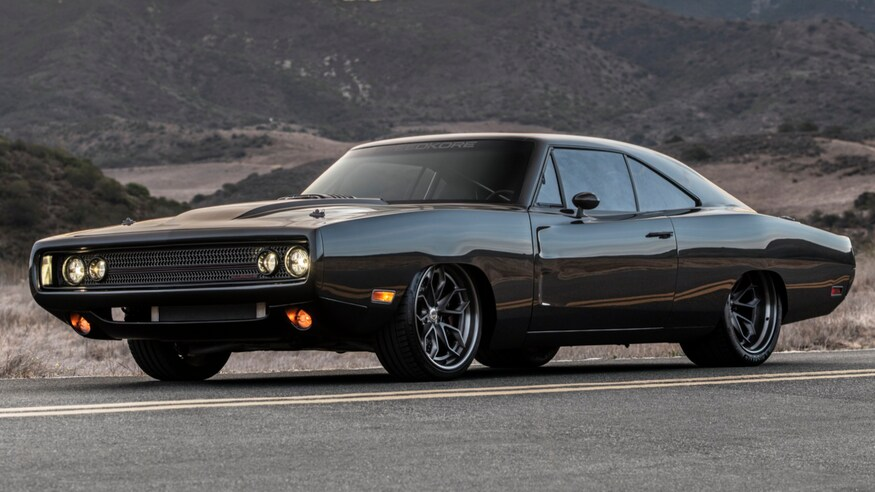

DODGE CHALLENGER (1970-1974) First Generation

Video: The 1970 Challenger R/T
The Dodge Challenger made a late but highly ambitious entry into the American Muscle Car market, serving as Chrysler’s (Mopar’s) most aggressive answer to the Ford Mustang and Chevrolet Camaro. First introduced for the 1970 model year, the Challenger was built upon the new E-Body platform shared with the Plymouth Barracuda, yet it featured a slightly longer wheelbase to offer more interior luxury and a more stable high-speed stance.
What truly set the Challenger apart was the sheer variety of powertrain options. From the modest Slant-Six to the earth-shaking 426 Hemi, Dodge offered an engine for every type of driver. The R/T (Road/Track) models, in particular, became the stuff of legends, often featuring "High Impact" paint colors like Plum Crazy and Go ManGo that reflected the vibrant muscle car culture of the era.
Beyond its technical prowess, the Challenger became a cinematic immortal. Its starring role as the "white stallion" in the 1971 cult film *Vanishing Point* transformed it from a mere car into a symbol of ultimate freedom and rebellion. Despite its short initial production run, the First Generation Challenger remains one of the most coveted pieces of American iron, representing the absolute peak of the horsepower wars before the fuel crisis changed the industry forever.
Technical Specifications
| Dodge Challenger's Body Types |
|---|
| 2-Door Hardtop Coupe |
| 2-Door SE (Special Edition) Hardtop |
| 2-Door Convertible |
| T/A (Trans Am) Racing Homologation |
| Engine Type & Name | Displacement | Horsepower (HP) |
|---|---|---|
| I6 (Slant-Six) | 198 / 3.2L | 125 hp |
| I6 (Slant-Six) | 225 / 3.7L | 145 hp |
| Small Block V8 (LA) | 318 / 5.2L | 230 hp |
| Small Block V8 (High-Perf) | 340 / 5.6L | 275-290 hp |
| Big Block V8 (Magnum) | 383 / 6.3L | 290 – 335 hp |
| Big Block V8 (Magnum) | 440 / 7.2L | 375 hp |
| 440 Six-Pack (3x2 bbl) | 440 / 7.2L | 390 hp |
| The Elephant: 426 Hemi | 426 / 7.0L | 425 hp (Under-rated) |
| Color Name | HEX Code (Est.) |
|---|---|
| Plum Crazy Purple | #6D3E7E |
| Go ManGo (Orange) | #FF7E00 |
| Top Banana (Yellow) | #FFCC00 |
| Sublime Green | #40FF00 |
| Hemi Orange / Tor-Red | #EE4D2D |
| Furious Fuchsia | #CB0066 |
| Green Go | #3CB371 |
| Transmissions | Type |
|---|---|
| 3-Speed Manual | Floor Shifter |
| 4-Speed Manual | Hurst "Pistol Grip" |
| A727 TorqueFlite | Automatic (Heavy Duty) |
| A904 TorqueFlite | Automatic (Light Duty) |
DODGE CHARGER (1968-1970) Second Generation

Video: 1969 Charger R/T
The Dodge Charger is perhaps the most menacing and universally recognized symbol of the American Muscle Car era. While its journey began in 1966, it was the 2nd Generation (1968-1970) that cemented its place in history. Abandoning the fastback look of the 1st Gen, Dodge introduced the iconic "Coke Bottle" shape, featuring a recessed rear window and a hidden-headlight "electric shaver" grille that gave the car a predatory, intimidating stare.
The Charger was more than just a street bruiser; it was a dominant force in NASCAR. The quest for speed led to the creation of the Charger 500 and the radical Dodge Charger Daytona, which became the first car in NASCAR history to break the 200 mph barrier. On the streets, the R/T package provided the 440 Magnum as standard equipment, ensuring that the Charger's performance matched its aggressive looks.
In popular culture, the Charger is an undisputed heavyweight. From the sinister black '68 Charger that chased Steve McQueen in *Bullitt* to the bright orange "General Lee" from *The Dukes of Hazzard*, this car has spent more time on screen than almost any other vehicle. It represents the purest, wildest form of Mopar performance—a heavy-hitting, tire-shredding icon that remains the ultimate dream for muscle car enthusiasts worldwide.
Technical Specifications
| Dodge Charger's Body Types |
|---|
| 2-Door Hardtop Coupe |
| 500 (Aero-special) |
| Daytona (Winged Warrior) |
| Engine Type & Name | Displacement | Horsepower (HP) |
|---|---|---|
| I6 (Slant-Six) | 225 / 3.7L | 145 hp |
| Small Block V8 | 318 / 5.2L | 230 hp |
| Big Block V8 (B-Series) | 383 / 6.3L | 290-335 hp |
| Big Block V8 (RB-Series) | 440 / 7.2L | 375 hp |
| 440 Six-Pack | 440 / 7.2L | 390 hp |
| 426 Hemi (Race Derived) | 426 / 7.0L | 425 hp |
| Color Name | HEX Code (Est.) |
|---|---|
| Hemi Orange / Tor-Red | #EE4D2D |
| Plum Crazy | #6D3E7E |
| Top Banana | #FFCC00 |
| Sublime Green | #40FF00 |
| F8 Green (Metallic) | #2A554A |
| B5 Blue (Metallic) | #0072CE |
| Black Velvet (Bullitt) | #000000 |
| Transmissions | Note |
|---|---|
| 3-Speed Manual | Standard |
| 4-Speed Manual | Hurst Shifter |
| 3-Speed TorqueFlite | Column or Floor Shift |